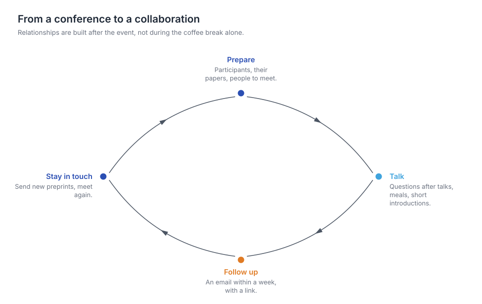

Guides · Careers
Conferences and networking
How to choose conferences, apply for travel funding, prepare a short talk or poster, talk to senior researchers, and turn meetings into lasting professional relationships.

Path · Getting it published · step 6 of 6

Conferences are where research communities meet. They are where you learn what people are working on now, where your future collaborators and letter writers first hear about you, and where many positions are discussed informally.
Choosing conferences#
- Large meetings (national society meetings, international congresses): broad, many parallel sessions, good for visibility.
- Specialised workshops: small, focused, often with more discussion time. Often the most useful for a PhD student.
- Summer schools: lectures for students and early-career researchers. Excellent to learn a topic and meet people of your generation.
- Research programmes at institutes (several weeks or months): ideal for intensive collaboration.
Ask your supervisor which events matter in your area. Look at the websites of mathematical institutes and societies.
Funding#
- Many events offer travel grants for students and early-career researchers. Apply early and read the conditions.
- Your department, doctoral school or supervisor's grant may cover travel.
- National societies and some foundations have small travel grant programmes.
- Explain in your application why the event matters for your research.
Contributed talks and posters#
- Submit a short abstract: the question, the result, why it matters.
- A short talk (15–20 minutes) should present one result clearly. See Giving a research talk.
- A poster should be readable from two metres: a title, a picture, three or four boxes of short text.
Talking to people#
Many students find this the hardest part. A few practical rules:
- Prepare: before the event, look at the list of participants and their recent papers. Choose a few people you want to talk to.
- Ask questions after talks: a good question is an easy way to start a conversation.
- Use breaks and meals: sit with people you do not know.
- Introduce yourself simply: your name, where you study, what you work on, in two sentences.
- Listen more than you speak: ask people what they are working on.
An elevator description of your work#
Prepare three versions of what you work on:
- One sentence, for anyone.
- Thirty seconds, for a researcher in a neighbouring area.
- Two minutes, for a specialist.
After the event#
- Write down the names and topics of the people you met.
- Send a short email to the people with whom you had a real discussion: thank them, mention the topic, send a link to a relevant paper.
- Follow up on promises (sending a reference, a preprint, a question).
- Stay in touch: send your new preprints to the people who were interested.
Online presence#
- A simple personal web page with your CV, papers and talks.
- An up-to-date profile on arXiv, ORCID and Google Scholar.
- Optional: a professional account where your community is active.
Checklist#
- I chose events that match my research and stage.
- I applied for travel funding early.
- I prepared a one-sentence and a two-minute description of my work.
- I talked to at least three new people.
- I followed up by email within a week.
Discussion
Questions, corrections and your own experience are welcome. Comments live in the forum, on GitHub Discussions, with Markdown and LaTeX.